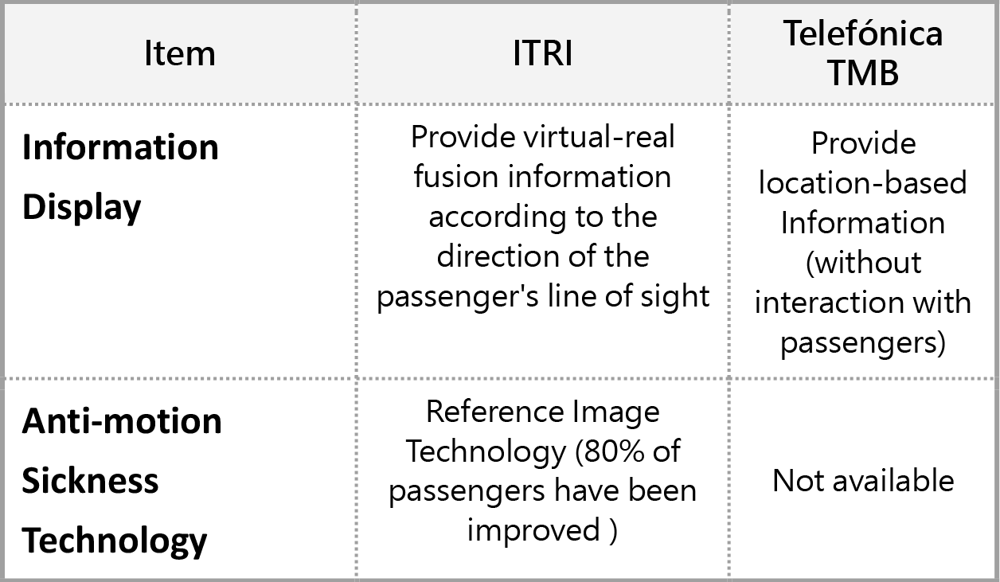

| 全球首展抗暈眩車載虛實融合技術 Anti-motion Sickness Technology for In-vehicle Virtual-real Fusion System |
| 因應未來智慧移動發展趨勢，工研院開發全球首展抗暈眩車載虛實融合技術，整合視覺參考圖像於透明顯示器，改善乘客在晃動座艙中閱讀顯示資訊導致暈眩的問題，經人因實驗有80%以上的乘客暈眩不適獲得舒緩改善，未來可應用於智慧觀光巴士等場域。 In response to future trend of smart mobility, ITRI has developed the world's first anti-motion sickness technology for In-vehicle virtual-real fusion system. By integrating a visual reference image on a transparent display, it improves the problem of dizziness caused while passengers reading virtual-real fusion information in a shaking cockpit. By human factors experiments, more than 80% of passengers have been improved the problem of dizziness. It can be applied to smart mobility such as smart sightseeing buses in future.  |
| 技術洽詢聯絡人：黃淑琦 聯絡電話：03-5917437 E-mail：JaniceHuang@itri.org.tw |